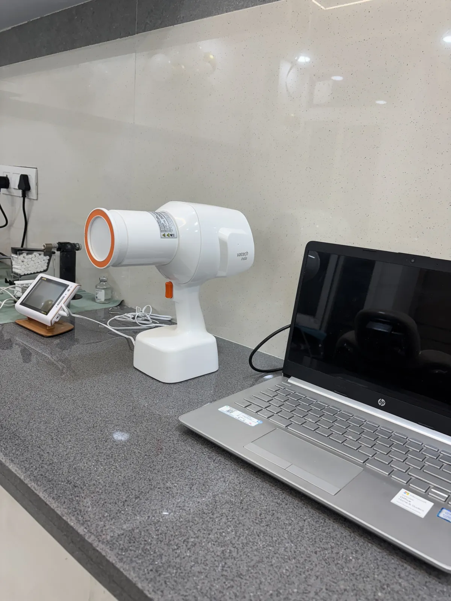

Wisdom teeth — third molars — usually arrive between seventeen and twenty-five, into a jaw that frequently has no room left for them. Some erupt normally and function for life. Others never appear at all, which is entirely normal. The rest cause trouble, and those are the ones worth removing.
When removal is genuinely indicated
- Repeated pericoronitis. Where a flap of gum partly covers the tooth, food and bacteria collect underneath and the gum becomes infected, swollen and painful. One episode may be manageable; recurring episodes are the commonest reason for removal.
- Decay in the wisdom tooth or the tooth in front of it. A partly erupted wisdom tooth traps plaque against the back of the second molar — a surface that cannot be cleaned. Losing a healthy second molar to decay caused by a wisdom tooth is a genuinely bad outcome, and it is common.
- Cysts or bone changes visible on X-ray around an impacted tooth.
- Gum disease localised around it that cannot be controlled.
- Damage to the adjacent tooth's root from an angled impaction.
- It is unopposed and over-erupting into the opposite gum, or repeatedly biting the cheek.
When it can be left
A wisdom tooth that is fully erupted, in a normal position, cleanable, and causing no symptoms does not need removing. Neither does one that is completely buried in bone with no cyst, no decay and no symptoms — these are often best monitored with periodic X-rays.
Guidance in most countries has moved away from routine prophylactic removal of asymptomatic wisdom teeth, on the reasonable ground that surgery has risks and doing nothing frequently has none.
The straightening myth
Wisdom teeth are widely blamed for pushing the front teeth crooked. The evidence for this is weak. Lower front crowding increases with age in most people, including those born without wisdom teeth at all. Removing them purely to prevent crowding is not supported.
What impaction means
An impacted tooth is one that cannot fully erupt. The angle determines the difficulty: vertical impactions are the simplest, mesioangular (tilted forward) are the most common, horizontal ones lie on their side against the tooth in front, and distoangular tilt backwards and are typically the hardest to remove.
The risk worth discussing
Lower wisdom tooth roots can lie very close to the inferior alveolar nerve, which supplies feeling to the lip and chin. Disturbing it causes numbness or tingling — usually temporary, occasionally permanent. This is precisely why an X-ray is taken before any decision, and why in selected high-risk cases a coronectomy, where only the crown is removed and the roots are left undisturbed, may be the safer option.
Any reasonable consultation should cover: what your X-ray shows, whether the tooth is actually causing a problem, what the specific risks are in your case, and what happens if you do nothing. If removal is being recommended without that conversation, ask for it.
Frequently asked questions
Should I remove wisdom teeth that don't hurt?
Usually not. Current guidance is against routine removal of asymptomatic, disease-free wisdom teeth. They are monitored instead, with removal reserved for decay, infection, cysts or damage to the neighbouring tooth.
Do wisdom teeth make front teeth crooked?
The evidence is weak. Lower front crowding increases with age even in people who never developed wisdom teeth. Removing them purely to prevent crowding is not supported.
What is pericoronitis?
Infection under the flap of gum that partly covers an erupting wisdom tooth. It causes swelling, pain and often a bad taste. Repeated episodes are the most common genuine reason for removal.
Is wisdom tooth removal painful?
The procedure itself is done under local anaesthesia and should not hurt. Discomfort and swelling for two to four days afterwards is normal, and is managed with painkillers, cold packs and soft food.
Talk to a dentist in Dehradun
A wisdom tooth causing no problem often needs nothing but monitoring. If you would like this looked at, it is what we do every day at Vital Dental Care & Implant Center, Haripuram Colony, 2 GMS Road, Engineers Enclave, Kanwali, Dehradun, Uttarakhand 248001 — close to Ballupur Chowk, Prem Nagar, Clement Town and Rajpur Road.
- Consulting hoursSunday to Friday, 10:00–14:00 and 16:00–20:00. Closed Saturday.
- Treating dentistDr. Pragati Singh, B.D.S., M.D.S. — Endodontist
- Appointments92868 98353 or WhatsApp
Related: Wisdom tooth extraction, extraction aftercare, oral surgery.